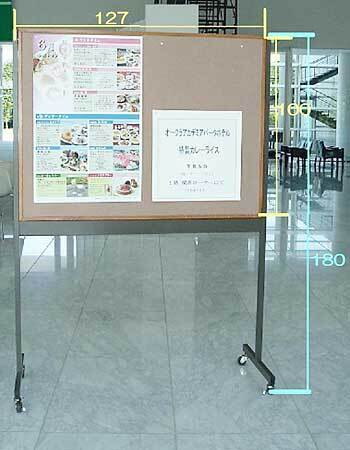

HOME
開催概要・年会組織
ご挨拶
プログラム・日程表
参加申込・演題登録
座長・発表者へのご案内
参加者へのご案内
出展・広告関連
お問い合わせ
座長・発表者へのご案内
口頭発表者、ポスター発表者はオンサイトでの発表をお願いします。
口頭発表について
発表時間は10分以内、討論2分です。時間厳守にご協力ください。
発表は全てプロジェクターを使用して行います。ご自身のノートPCとプロジェクタをつなぐアダプター（HDMI）をご持参いただきますようお願いします。
ショートトーク発表者へのご案内
発表時間は2分以内（討論は無し）です。時間厳守にご協力ください。
発表は全てプロジェクターを使用して行います。
発表スライドは2-3枚で作成し、アニメーションは使用しないでください。
ショートトークの発表スライドはPDFファイルとして3/7 (火)までに、sgmj2023 あっと gmail.com にメールの添付ファイルで提出をお願いします。 年会事務局側で全ショートトークスライドを統合してご用意します。当日演台に設置したPCで操作してください。
ポスター発表について
ポスター貼り付け日時: 3/8 (水) 12:45-16:30の間
ポスター発表コアタイム:
偶数番号のポスター: 3/8 16:30-17:00および、3/9 15:40-16:10
奇数番号のポスター: 3/8 17:00-17:30および、3/9 16:10-16:40
ポスターは
ピンナップボード（横127cm x 縦180cm)
に貼り付けますので、サイズはB0でもA0でもどちらでも可能です。ただし、固定できる面は横127cm x 縦100cmと縦が短いため、B0の場合もA0の場合も下部が多少はみ出ます。はみ出たポスター下部が巻いて見辛くなる可能性がある点はご了承ください。

その他のお知らせについては現在準備中です。
ページの先頭へ
年会に関するお問い合わせ
Copyright © 2023 Society of Genome Microbiology, Japan. All Rights Reserved.